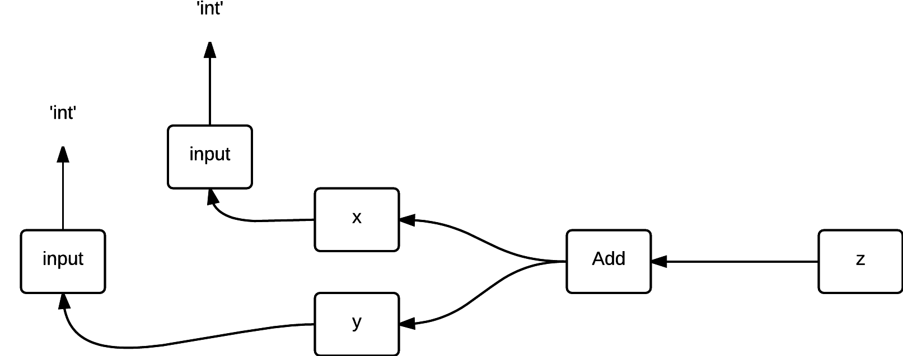

Constant Folding and Type Checking
Our compiler project
The Problems
Too many temp variables when adding
Too many conditionals
Slow coloring
Overall, too many lines of code to debug
Constant Folding
The problem
def f():
x = 1 + 2 + 3 + 4 + 5 + 6 + 7 + 8 + 9 + 10 + 11 + 12 + 13\
+ 14 + 15 + 16 + 17 + 18 + 19 + 20+ 21 + 22 + 23 + 24 + 25\
+ 26 + 27 + 28 + 29 + 30 + 31 + 32 + 33 + 34 + 35 + 36 + 37
return 1 + 2 + 3 + 4 + x
print f()
Lines without folding
3231 tests/big_no_fold.s
Lines with folding
387 tests/bigfold.s
Interesting example 1
def f():
y = 12
x = 1 + 2 + input() + 12 + y + input() + 5
return x
print f()
Converts into
def f():
y = 12
x = 20 + input() + y + input()
return x
print f()
Interesting example 2
def f():
y = 12
x = 1 + 2 + 3 + - (input() + 12 + 2 + 1) + 20 + y + - (1 + input())
return x
print f()
Converts into
def f():
y = 12
x = 10 + - input() + y + - input()
return x
print f()
Folding Implementation
If child nodes include Const, add it to a list
If it includes another Add node, recurse on it
For anything else, recurse on it and add to another list
Return the two lists
Constant Propagation
(Not fully implemented)
Idea:
def f():
x = 14
y = 7 - x / 2
return y * (28 / x + 2)
Converts into
def f():
x = 14
y = 0
return 0
Propagation Implementation
Create a dictionary mapping variables to values
At every node, update the dictionary
If variable's value is known, store it, otherwise set it to 'unknown'
Do the folding in second recursion using the dictionary
Compile-Time Type Checking
The Problem
Enormous conditionals
Hard to debug

Goal
Determine if we know variables typing at compile-time
Don't explicate if the type is known
Type-Checking Implementation
At every statement, store all variable types in a dictionary
Handle if statements and function arguments
At explicate pass, use the dictionary to skip some steps
Type-Checking Code
#adding l and r:
if (lType == 'int' or lType =='bool')
and (rType == 'int' or rType=='bool'):
return InjectFrom('int', Add(
(ProjectTo('int',l),ProjectTo('int',r))))
if lType == "big" and rType == "big":
return InjectFrom('big',CallFunc(Name("add"),
[ProjectTo('big',l),ProjectTo('big',r)]))
Example
x=input()
y=input()
z=x+-y
print z
The contents of the dictionary at each point
Assign([AssName('True a0', 'OP_ASSIGN')], Const(1.25))
--> {'True a0': 'bool', 'fvs': 'unknown'}
Assign([AssName('False a0', 'OP_ASSIGN')], Const(0.25))
--> {'False a0': 'bool', 'fvs': 'unknown', 'True a0': 'bool'}
Assign([AssName('x a0', 'OP_ASSIGN')], CallFunc(Name('input'),
[], None, None))
--> {'False a0': 'bool', 'True a0': 'bool', 'fvs': 'unknown',
'x a0': 'int'}
Assign([AssName('y a0', 'OP_ASSIGN')], CallFunc(Name('input'),
[], None, None))
--> {'False a0': 'bool', 'fvs': 'unknown', 'y a0': 'int', 'True a0':
'bool', 'x a0': 'int'}
Continued
Assign([AssName('z a0', 'OP_ASSIGN')], Add((Name('x a0'),
UnarySub(Name('y a0')))))
--> {'False a0': 'bool', 'fvs': 'unknown', 'y a0': 'int', 'z a0':
'int', 'True a0': 'bool', 'x a0': 'int'}
Printnl([Name('z a0')], None)
--> {'False a0': 'bool', 'y a0': 'int', 'z a0': 'int', 'True a0':
'bool', 'fvs': 'unknown', 'x a0': 'int'}
--> {'False a0': 'bool', 'y a0': 'int', 'z a0': 'int', 'True a0':
'bool', 'fvs': 'unknown', 'x a0': 'int'}
Drastic Improvement
Run time of infamous simplex test without our type checking
59038 lines, 1 min 10 secs compile
Run time with our type checking
10065 lines, 5 secs compile
Eliminates massive conditionals of addition and comparisons
Benefits to debugging and runtime performance
Future Usage and Development
Constant Propagation
Analysis for heapified variables and lists
Type-error checking and warnings at compile-time
Removing unnecessary InjectFrom and ProjectTo lines